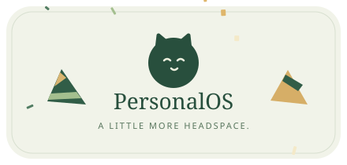

<!doctype html><html><meta charset="utf-8"><meta name="viewport" content="width=device-width"><title>PersonalOS · Celebration</title><style>html,body{margin:0;min-height:100%;background:#14231a}body{min-height:100vh;display:grid;place-items:center;font-family:system-ui;color:#dde6d1}.stage{text-align:center;max-width:700px;padding:24px}.stage img{width:min(92vw,440px);filter:drop-shadow(0 25px 40px #0005)}p{font-size:12px;letter-spacing:.08em;color:#a3b49d}a{color:#d6e1c5}</style><main class="stage"><p>主人，首个可运行里程碑已落地 🎉 喵～</p><p><a href="http://localhost:3000/dashboard">Open the workspace →</a></p></main></html>